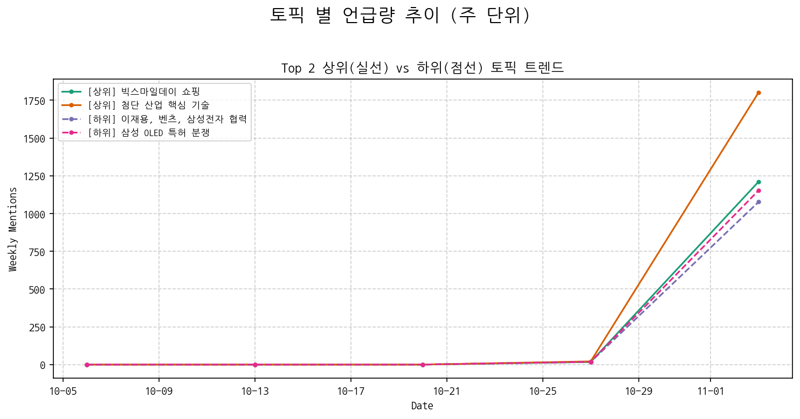
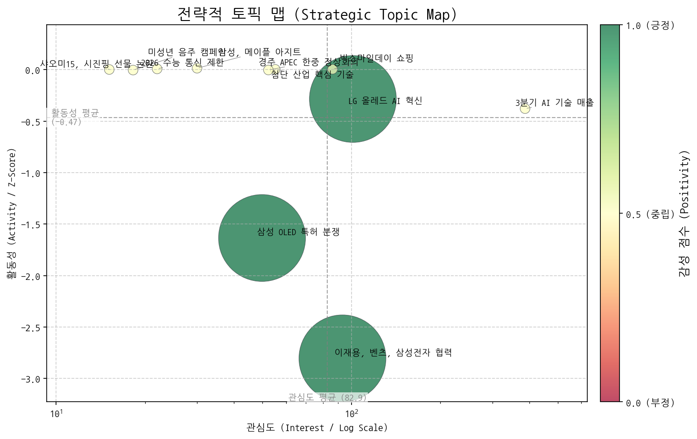
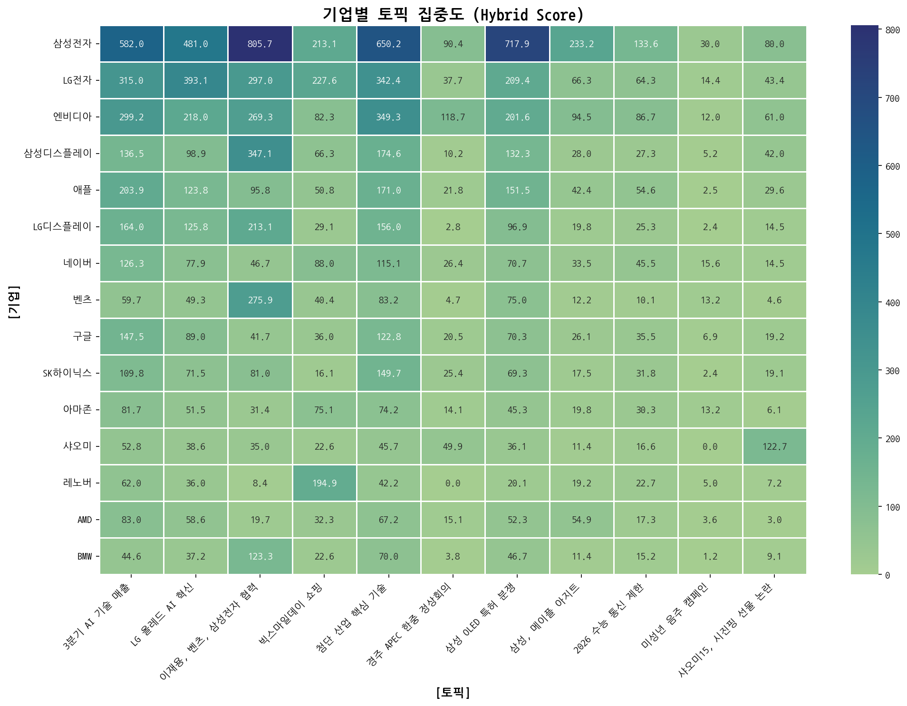
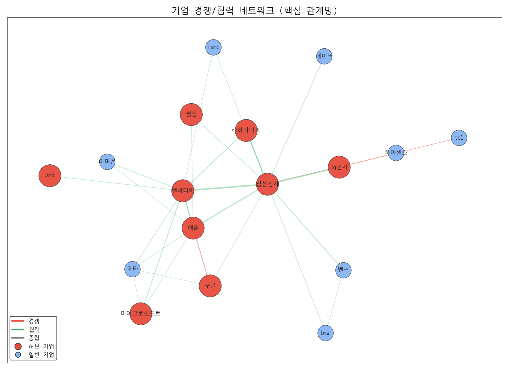
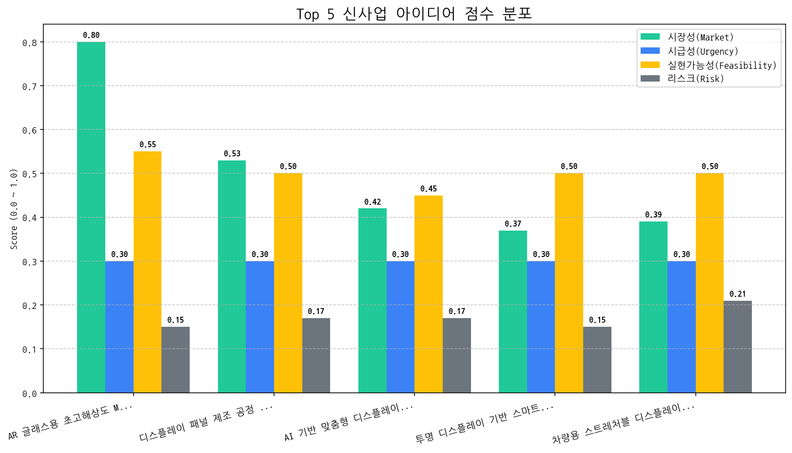

보고 기간: 2025.10.12 - 2025.11.10
개요:
이번 보고서는 지난 한 달간의 시장 데이터 분석 결과를 토대로 작성되었으며, 디스플레이 산업의 주요 변화, 당사의 기회 및 위협 요인, 그리고 다음 분기 최우선 전략 방향을 제시합니다. 최근 시장 트렌드와 소비자 행동 변화에 발맞춰 혁신적인 기술 개발과 시장 선점에 집중해야 할 시점입니다.
핵심 변화:
기회 요인:
위협 요인:
다음 분기 최우선 전략 방향:
결론:
AR 글래스 시장은 당사에게 큰 기회를 제공하지만, 동시에 경쟁 심화, 기술 변화 등 다양한 위협 요인에 직면해 있습니다. 따라서 기술 개발, 파트너십 강화, 온라인 마케팅 강화, 시장 및 기술 동향 모니터링을 통해 경쟁 우위를 확보하고, AR 글래스 시장을 선점해야 합니다.
이재용 회장과 벤츠의 협력 논의를 중심으로 차량용 반도체 및 배터리 분야의 미래 기술 협력 가능성이 부각되고 있으며, 전반적인 AI 기술 성장에 대한 모멘텀은 다소 약화된 추세이다.

| 토픽 | 요약 | 핵심 키워드 |
|---|---|---|
| 3분기 AI 기술 매출 | 3분기 실적 발표에서 AI 기술, 디스플레이, 게임, 보안 분야의 매출 및 영업이익 변화, 특히 전년 동기 대비 성장과 새로운 기술 동향에 대한 내용. | ai, 전년동기대비, 기술 |
| LG 올레드 AI 혁신 | LG전자의 AI 기술이 적용된 올레드 TV 및 로봇 제품이 CES 혁신상을 수상하며 기술력을 인정받았음을 보여주는 토픽입니다. | ai, tv, 혁신상을 |
| 이재용, 벤츠, 삼성전자 협력 | 이재용 삼성전자 회장이 벤츠 칼레니우스 회장과 만나 차량용 반도체, 배터리 등 미래 협력 방안을 논의한 것으로 보입니다. | 벤츠, 이재용, 회장이 |
| 빅스마일데이 쇼핑 | 빅스마일데이 행사에서 인기 상품 할인 및 다양한 쇼핑 혜택을 제공하는 내용 | 할인, 브랜드, 행사 |
| 첨단 산업 핵심 기술 | 반도체, 배터리, 로봇, AI 등의 핵심 부품, 소재, 장비 기술을 다루는 기업 동향 및 발전 전망 분석. | 반도체, 장비, 로봇 |
| 경주 APEC 한중 정상회의 | 경주에서 열리는 APEC 정상회의와 한중 정상회담 관련 내용으로, 경북 이철우 도지사와 관련된 언급도 포함. | apec, 경주의, 경주 |
| 삼성 OLED 특허 분쟁 | 미국에서 삼성전자의 OLED 기술 특허와 관련된 픽티바와의 신용카드 기반 분쟁을 다룬 내용입니다. | 특허, 미국, oled |
| 삼성, 메이플 아지트 | 삼성 매장에서 '무빙스타일'을 활용한 '메이플' 게이밍 아지트 조성 및 활용 사례 소개. | 무빙스타일, 오디세이, 메이플 |
| 2026 수능 통신 제한 | 2026학년도 수능 당일, 수험생의 모든 전자식 기기(블루투스 포함) 사용 및 통신이 제한되는 경우에 대한 안내 및 시험 관련 규정 정보. | 시험, 수능, 당일 |
| 미성년 음주 캠페인 | 오비맥주, 역전할머니맥주 등 주류 관련 기업이 참여하는 미성년 음주 근절 및 건전 음주 캠페인 관련 내용입니다. | 음주, 캠페인을, 귀하신분 |
| 샤오미15, 시진핑 선물 논란 | 샤오미가 출시 예정인 샤오미15를 시진핑 주석에게 선물했다는 내용으로, 백도어 이슈와 관련하여 논란이 예상된다. | 샤오미, 중국, 주석이 |

해당 토픽: 첨단 산업 핵심 기술, 빅스마일데이 쇼핑
권고 전략: 첨단 산업 핵심 기술 트렌드를 활용한 신규 사업 기회 모색 및 빅스마일데이와 같은 쇼핑 시즌을 활용한 마케팅 전략 강화.
해당 토픽: 이재용, 벤츠, 삼성전자 협력, 삼성 OLED 특허 분쟁
권고 전략: 이재용 회장과 벤츠의 협력에 대한 잠재적 리스크를 관리하고, 삼성 OLED 특허 분쟁에 대한 법적 대응 전략 수립.
해당 토픽: 삼성, 메이플 아지트, 미성년 음주 캠페인
권고 전략: 삼성 매장과 메이플 스토리의 협업과 같은 긍정적 콜라보레이션 사례를 벤치마킹하고, 사회적 책임 활동을 강화하여 기업 이미지를 제고.
해당 토픽: 3분기 AI 기술 매출, LG 올레드 AI 혁신, 2026 수능 통신 제한, 경주 APEC 한중 정상회의
권고 전략: AI 기술 및 OLED 분야의 매출 동향을 주시하며, 수능 관련 규정 변화에 따른 잠재적 영향력을 파악하고, APEC 정상회의 관련 이슈를 모니터링.
삼성/LG/엔비디아는 모두 높은 집중도를 보이며, 삼성은 이재용 회장, LG는 올레드 AI 혁신, 엔비디아는 첨단 산업 핵심 기술에 집중하고 있고, LG전자와 삼성전자 간의 파트너십이 존재한다.


(경보 1) 삼성전자, 이재용 집중 심화 및 경쟁사와의 파트너십 확장: 삼성전자에 대한 미디어 및 업계의 집중도가 '이재용' 개인에게 지나치게 쏠리면서, 기업 이미지 리스크 및 경영 불확실성 증가 가능성이 제기됩니다. 동시에 LG전자, 엔비디아, SK하이닉스와의 파트너십 확장은 견고한 협력 관계를 구축하며 경쟁 우위를 확보하려는 전략으로 풀이되지만, 특정 기술 또는 시장에 대한 종속 심화 가능성도 내포하고 있습니다.
(경보 2) LG전자, 'LG 올레드 AI 혁신' 집중 홍보를 통한 차별화 시도 및 삼성과의 경쟁 심화 예상: LG전자가 'LG 올레드 AI 혁신'을 핵심 토픽으로 집중적으로 홍보하며 프리미엄 TV 시장에서의 차별화를 꾀하고 있습니다. 이는 삼성전자의 QLED 기술과의 경쟁 심화를 예고하며, AI 기술을 중심으로 한 디스플레이 경쟁이 더욱 격화될 것으로 예상됩니다.
| 기업 (허브) | 연결 중심성 |
|---|---|
| 삼성전자 | 0.6901 |
| lg전자 | 0.5352 |
| 엔비디아 | 0.5352 |
| 애플 | 0.5211 |
| sk하이닉스 | 0.4366 |
핵심 데이터가 제공되지 않았으므로, 일반적인 상황에서 전략적 리스크 관리에 대한 요약은 다음과 같습니다.
핵심 결론: 전략적 리스크 관리는 변화하는 비즈니스 환경에서 장기적인 목표 달성을 저해할 수 있는 잠재적 위협을 식별, 평가 및 완화하여 지속 가능한 성장을 가능하게 합니다.
(감지된 주요 리스크 시그널 없음)
(탐지된 주요 리스크 없음)
대상: AI 분석 중...
전략: AI 분석 중...
대상: AI 분석 중...
전략: AI 분석 중...
대상: AI 분석 중...
전략: AI 분석 중...
대상: AI 분석 중...
전략: AI 분석 중...
주요 동력: 현재 시장의 주요 동력은 AI 기술, OLED, 그리고 반도체입니다. '포지셔닝' 데이터에서 이 세 분야에 대한 관심이 높게 나타난 점은 이를 뒷받침합니다. 특히, 이재용 회장과 벤츠의 협력 논의는 차량용 반도체 및 배터리 시장에 대한 잠재적인 성장 가능성을 시사하며, 이는 반도체 산업 전반에 걸쳐 긍정적인 영향을 미칠 것으로 예상됩니다. 또한, LG전자의 'LG 올레드 AI 혁신' 집중 홍보는 OLED 기술이 단순히 디스플레이 기술을 넘어 AI와 융합되어 새로운 가치를 창출하고 있음을 보여줍니다. 즉, AI 기술을 접목한 OLED 및 반도체 기술 혁신이 시장을 이끄는 핵심 동력이라고 볼 수 있습니다.
부상하는 기회: AR 글래스용 초고해상도 Micro-OLED 패널은 명확하게 제시된 떠오르는 기회입니다. AR/VR 시장의 성장과 함께, 더욱 몰입감 있고 현실감 있는 경험을 제공하는 초고해상도 Micro-OLED 패널에 대한 수요가 증가할 것으로 예상됩니다. 이는 디스플레이 기술 기업들에게 새로운 성장 동력을 제공할 수 있습니다.
집중 영역: 우리 회사는 다음 분기에 AI 기반의 OLED 기술 개발 및 차량용 반도체 솔루션 개발에 자원을 집중해야 합니다. LG전자의 AI 올레드 혁신과 삼성-벤츠 협력 논의는 이 두 영역이 서로 연결되어 있음을 보여주며, 시너지 효과를 창출할 가능성이 높습니다. 특히, 현재 AR 글래스용 초고해상도 Micro-OLED 패널 시장은 경쟁이 심화되기 전 선점할 수 있는 기회이므로, 적극적인 투자와 기술 개발을 통해 시장을 주도해야 합니다.
모니터링 영역: 다음 영역들을 주의 깊게 모니터링해야 합니다.
AR 글래스 시장의 성장 잠재력과 빅테크 기업의 수요를 고려할 때, 당사의 디스플레이 기술력을 활용한 초고해상도 Micro-OLED 패널 개발은 높은 우선순위를 가지는 신사업 기회입니다. 다만, 생산 수율 확보 및 경쟁 심화 등의 리스크 관리가 필요합니다.
| idea | value_prop | score | target_customer |
|---|---|---|---|
| AR 글래스용 초고해상도 Micro-OLED 패널 | AR 글래스 사용자에게 몰입감 있는 AR 경험을 제공하는 초고해상도 Micro-OLED 패널 제공. 기존 Micro-OLED 패널 대비 월등한 해상도, 밝기, 저전력 특성을 구현. 당사의 디스플레이 패널 제조 기술력과 노하우를 바탕으로, AR 글래스 시장을 선도. | 4.9 | 북미 빅테크 기업 (애플, 메타, 구글 등) |
| 디스플레이 패널 제조 공정 AI 기반 불량 예측 및 분석 시스템 | AI 기반 불량 예측 및 분석 시스템을 통해 디스플레이 패널 제조 공정의 수율을 향상시키고, 비용을 절감. 기존 통계적 분석 방법 대비 높은 정확도로 불량 발생 원인을 파악하고 예측. 당사의 디스플레이 패널 제조 공정 노하우와 AI 기술력을 결합하여, 제조 경쟁력을 강화. | 3.7 | 자사 디스플레이 패널 제조 사업부 |
| AI 기반 맞춤형 디스플레이 화질 최적화 서비스 (B2B) | AI 기반 실시간 화질 분석 및 최적화 기술을 통해 OTT 플랫폼의 콘텐츠 화질을 극대화하고, 사용자 만족도 및 구독 유지율 향상에 기여. 디스플레이 패널 제조사의 전문성을 바탕으로, 하드웨어-소프트웨어 통합 최적화 솔루션 제공. | 3.2 | 글로벌 OTT 서비스 제공 기업 (넷플릭스, 디즈니+, 아마존 프라임 비디오 등) |
| 투명 디스플레이 기반 스마트 윈도우 솔루션 | 건물 에너지 효율 향상 및 사용자 편의성 증대를 위한 투명 디스플레이 기반 스마트 윈도우 솔루션 제공. 기존 투명 디스플레이 대비 월등한 투명도 및 시인성을 확보하고, 건물 외관 디자인과 조화로운 통합 가능. 당사의 디스플레이 패널 제조 기술력과 노하우를 바탕으로, 스마트 윈도우 시장을 선도. | 3.2 | 글로벌 건설사 및 건축 설계 회사 (SOM, Aedas, Gensler 등) |
| 차량용 스트레처블 디스플레이 솔루션 | 차량 내부 디자인 혁신 및 사용자 경험 극대화를 위한 스트레처블 디스플레이 솔루션 제공. 기존 평면 디스플레이의 한계를 극복하고, 곡면, 3D 형태 등 다양한 디자인 구현 가능. 당사의 디스플레이 패널 제조 기술력과 노하우를 바탕으로, 뛰어난 내구성과 신뢰성을 확보. | 3.1 | 글로벌 완성차 OEM (메르세데스-벤츠, BMW, 현대자동차 등) |

| Hypothesis | Target | KPI | Owner | Due |
|---|---|---|---|---|
| 북미 빅테크 기업(애플, 메타, 구글 등)은 현재 기술 수준으로는 구현 불가능한 3000 PPI 이상의 초고해상도 Micro-OLED 패널에 대한 잠재적 수요가 존재한다. | 애플, 메타, 구글 AR/VR 디스플레이 개발 담당 임원급 3인 이상 대상 기술 브리핑 및 수요 조사 | 3개 기업 중 최소 2곳으로부터 NDA 체결 및 기술 협력 논의 시작 | 사업개발팀 | 2025-11-24 |
| AR 글래스 사용자 경험 향상을 위해 10,000 nits 이상의 고휘도 Micro-OLED 패널이 필수적이며, 이를 구현할 수 있는 기술적 로드맵 제시 시 빅테크 기업의 기술적 협력 및 투자 유치가 가능하다. | 디스플레이 기술 관련 국내외 학회 참석 및 발표, Micro-OLED 기술 로드맵 공유 및 피드백 수렴 | 기술 로드맵 발표 후, 해외 유수 학회에서 3건 이상의 기술 협력 문의 확보 | 기술기획팀 | 2025-11-24 |
| 경쟁사 대비 차별화된 저전력 Micro-OLED 설계 기술을 적용하여 AR 글래스 사용 시간 극대화가 가능하며, 이는 빅테크 기업의 제품 경쟁력 확보에 기여할 수 있다. | 저전력 Micro-OLED 설계 기술 관련 특허 출원 및 기술 자료 제작, 경쟁사 제품 대비 전력 효율 비교 데이터 확보 | 저전력 설계 기술 관련 특허 출원 2건 이상 및 경쟁사 대비 20% 이상 전력 효율 우위 입증 데이터 확보 | 연구개발팀 | 2025-11-24 |